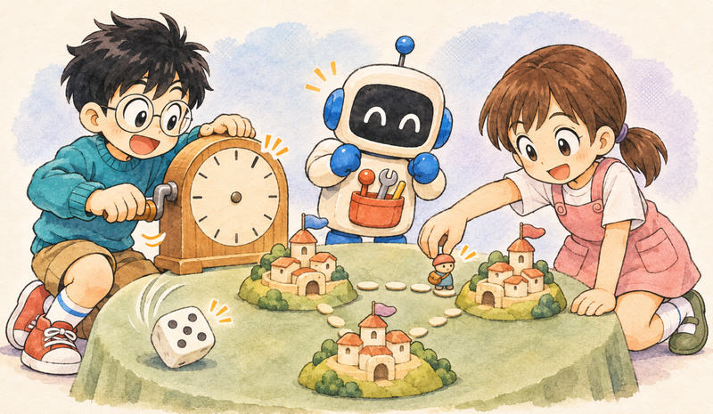
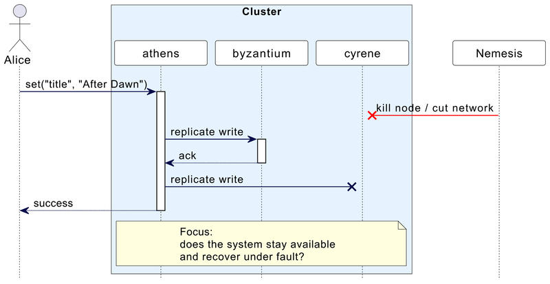
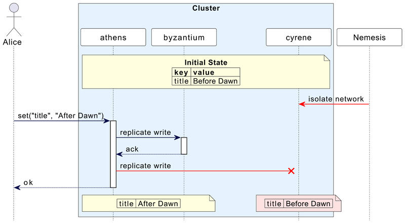
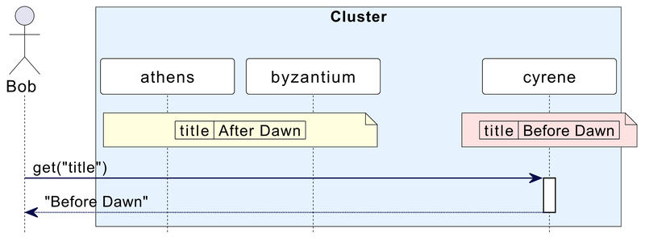

Feature 09 · ARTICLE · 2026 11
Deterministic Simulation Testing
Distributed systems are hard to test because partial failures overlap with live traffic, and the same fault can produce different executions on different runs. Chaos engineering and Jepsen find bugs, but to fix a bug you first need to reproduce it. Deterministic simulation testing runs the whole cluster on a single thread against a simulated clock, network, and disk. Nothing progresses unless the test ticks it. The same seed replays the same run, gray failures like a latency spike become a few ticks of delay, and a run that would take hours on a live cluster takes seconds. The price is upfront architecture: a single-threaded core, asynchronous I/O behind interfaces, and strict coding rules.

Why standard tests miss these bugs



Unit and integration tests check components and their interactions, mostly on the happy path. When they simulate failure, it is a clean one, like a graceful shutdown. In production, components rarely fail cleanly. A network drops a small percentage of packets or delays one message just long enough to trigger a timeout on one node but not another. A JVM pauses for garbage collection, misses a heartbeat, and wakes unaware it was ever paused. A disk takes 500ms instead of 2ms to sync a write-ahead log. These gray failures create the exact interleavings that break robust systems, and standard testing cannot create them on demand.
Chaos engineering injects faults and asks whether the system stays available. But availability is not the same as correctness. Take a three-node store, Athens, Byzantium, and Cyrene, needing a majority of two. A partition isolates Cyrene while Alice writes “After Dawn”; the write succeeds on the other two. If Bob then reads from Cyrene’s local state, he gets “Before Dawn”. Every request got a response, yet the consistency guarantee was broken. Jepsen catches this by recording the client-visible history and checking it against the system’s claimed semantics.
The nondeterminism problem
Reproducing a failure in a live cluster fails on two levels. Unseeded fault schedules differ every run; a seeded generator fixes that. But even with the same faults, execution differs. With Cyrene isolated, in Run 1 Byzantium’s acknowledgment arrives in time and Alice’s write succeeds; in Run 2 it is delayed and the write times out. Neither is wrong, but nothing in the test decides which one we get. A bug on the Run 2 path might never show up again.
There are four major sources of this: the clock, thread scheduling, network timing, and disk timing. Each changes when events become visible to the software.
In a real system, the CPU, NIC, and disk each progress at their own pace. In simulation, the test decides when each one moves:
Clock: it reads whatever the test has advanced it to.
Thread scheduling: the cluster runs on one thread, each process in a fixed order.
Network: a message is delivered only when the test ticks the network.
Disk: a write becomes durable only when the test ticks the disk.
Hard failures like crashes and partitions become easy to simulate. More importantly, routine slowdowns do too: a latency spike simply delays completion by a few ticks.
How Tickloom does it
Tickloom is a Java library I built for teaching distributed systems, drawing heavily on FoundationDB and TigerBeetle. Every process, in tests and in production, runs on a single thread, following the Singular Update Queue pattern. Every component whose progress must be controlled implements one interface:
public interface Tickable {
void tick();
}
The main loop calls tick() on each component in a fixed order. Between ticks, nothing changes. The thread running the ticks must never block: network and storage calls are asynchronous, there is no Thread.sleep(), and production network code uses non-blocking Java NIO.
Network. Protocol code talks only to a Network interface, never to sockets. send() returns at once; a reply is just another message arriving some ticks later. In tests, SimulatedNetwork passes messages in memory and supports partitions, loss, and delays. In production, NioNetwork implements the same contract over TCP. On send(), a message on a partitioned or lossy link is discarded; a survivor goes into a priority queue stamped with its delivery tick and a sequence number for deterministic FIFO order. On tick(), the network advances its counter, applies fault changes, and delivers everything due.
Timeouts. A time-of-day clock is not guaranteed to be monotonic, and a process pause can distort even monotonic measurement. So a Timeout counts ticks: a timeout of 10 expires after exactly 10 calls to tick(). etcd-raft does the same with its election and heartbeat ticks.
A test that decides. This test reproduces Run 2:
@Test
void writeTimesOutWhenAcknowledgmentIsDelayed() throws IOException {
try (Cluster cluster = new Cluster()
.withProcessIds(List.of(ATHENS, BYZANTIUM, CYRENE))
.withRequestTimeoutTicks(10)
.useSimulatedNetwork()
.build(QuorumReplica::new)) {
cluster.start();
cluster.isolateProcess(CYRENE);
cluster.setNetworkDelay(BYZANTIUM, ATHENS, 20);
QuorumReplicaClient alice =
cluster.newClientConnectedTo(ALICE, ATHENS, QuorumReplicaClient::new);
TickCompletableFuture<SetResponse> write =
alice.set("title".getBytes(), "After Dawn".getBytes());
cluster.tickUntil(() -> !write.isPending());
assertTrue(write.isFailed());
}
}
It fails on every run. Set the delay to one tick and it succeeds on every run. The outcome depends only on numbers the test chose.
Seeded faults. Known scenarios are mostly useful for learning and teaching. Production systems reveal bugs from interesting interleavings only after running for a longer duration, with random faults. A SimulationDecisions object, built on a seeded Random, decides each tick whether to issue a client request or inject a fault: isolate a node, partition a pair, delay a link, or drop a link. If a bug shows up for seed 42, running seed 42 again reproduces it. Logging the fault schedule and per-tick events often reveals the exact interleaving without a debugger, and these tick-stamped logs are particularly effective when handed to an LLM.
Fast-forward. A live test waits one real second to see a one-second timeout fire, and thousands of runs add up to days. The simulation’s 100 ticks are 100 loop iterations running as fast as the CPU allows. Replay helps after a bug is found; fast-forward helps find it.
Correctness. The runner records a client-visible history and passes it to a ConsistencyChecker that tests linearizability. A violation’s seed is enough to reproduce the exact execution. For liveness, the runner can heal the network, stop faults, and tick for a bounded time to assert that replicas converge and new operations succeed.
Trade-offs
Deterministic simulation testing cannot be added as an afterthought. A single-threaded core, asynchronous I/O, and avoiding thread-heavy libraries have to be built in from the start. These constraints apply only on the deterministic side of a seam formed by interfaces like Network, FileIO, and Clock. Behind it, production code may use background threads and system clocks, as long as results come back onto the tick() loop.
The core must obey six rules: no system clock calls, no unseeded randomness, no threads or standard futures, no direct network or disk I/O, no iteration over unordered collections, and no cross-thread callbacks across the seam. A single HashMap iteration or System.currentTimeMillis() in a handler silently breaks replay, so discipline and code review do not scale. ArchUnit checks the first five rules on every build. The sixth is enforced at runtime: TickCompletableFuture rejects completion from any thread but its owner. The seeded runner and consistency checker then act as a holistic fitness function.
Does designing for single-threaded simulation hurt production? In practice, the opposite is often true. Most distributed systems are IO bound, so single-threaded processing with asynchronous, batched I/O eliminates locking and context switches; Redis, FoundationDB, and TigerBeetle use the same architecture. Handlers must never block or do long CPU work, and scaling across cores means running more independent processes.
In my experience, the foundation takes upfront effort but makes protocol logic easier to write and evolve; the handlers are plain single-threaded code. It also helps learning: with the harness in place, an LLM can turn a scenario sketched in a book, such as the quorum linearizability anomaly in Designing Data-Intensive Applications, into an executable test.